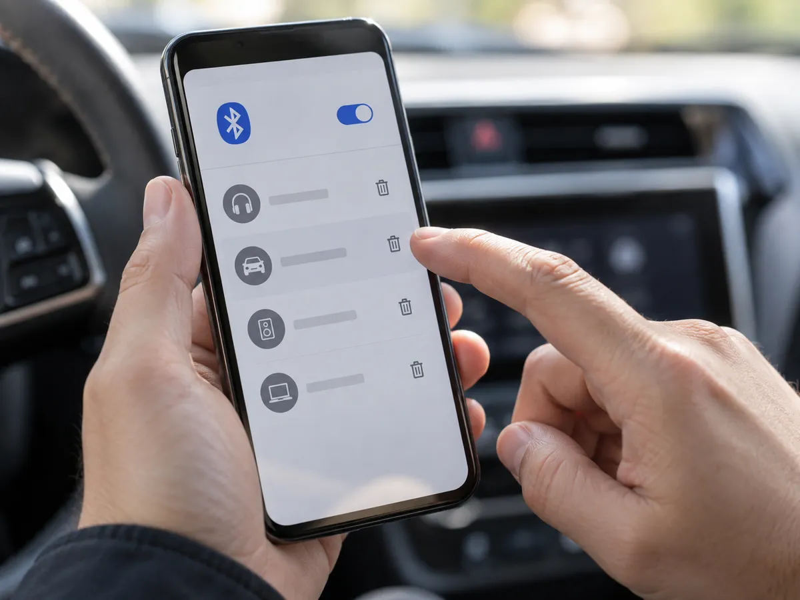
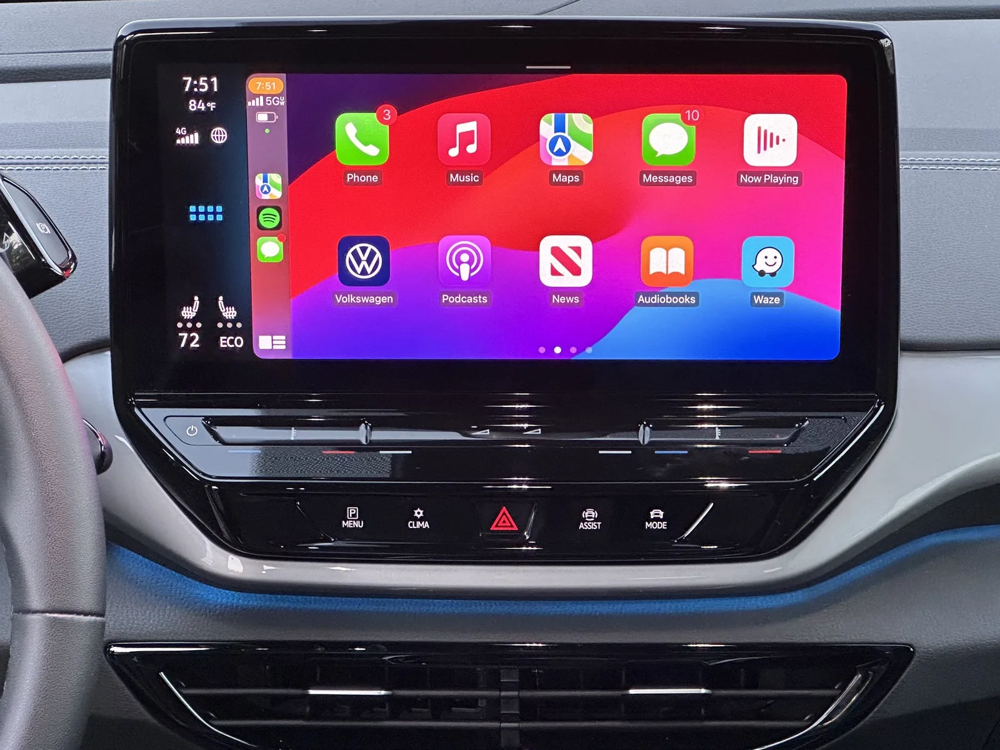
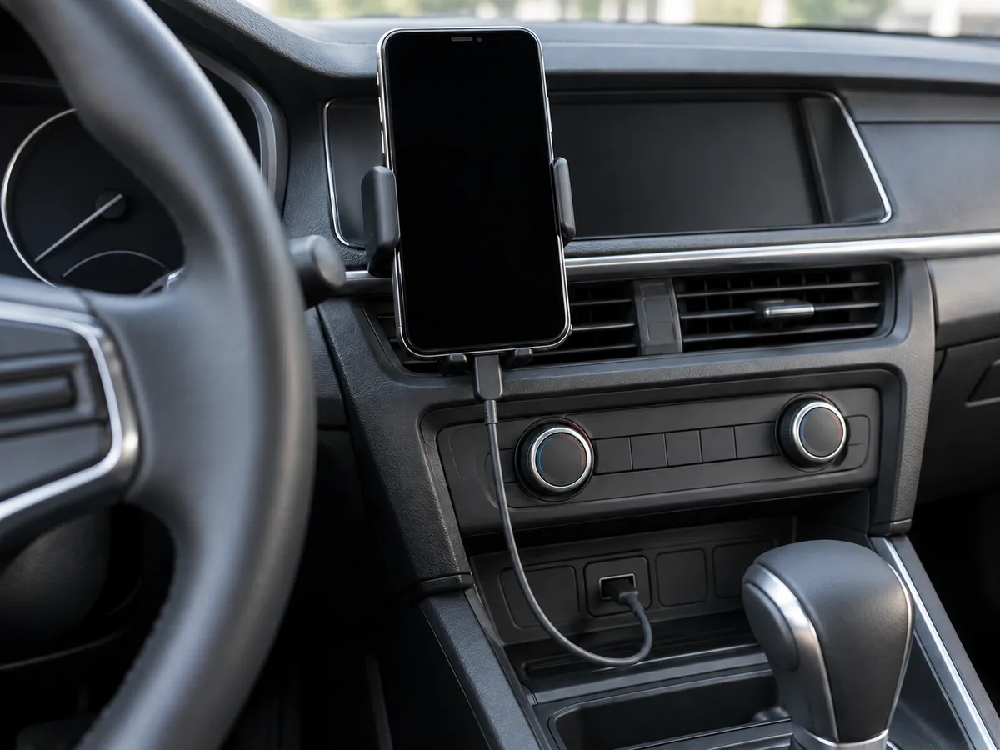
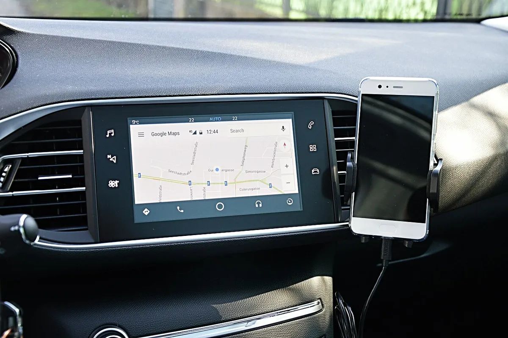
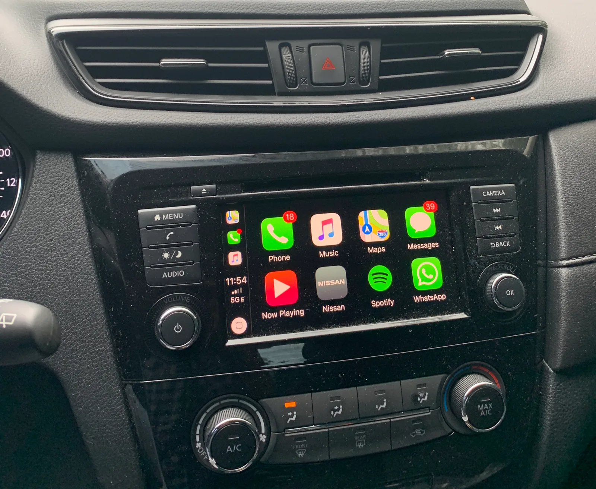
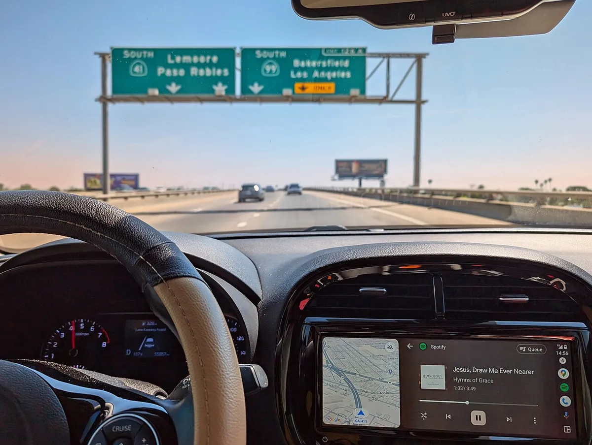
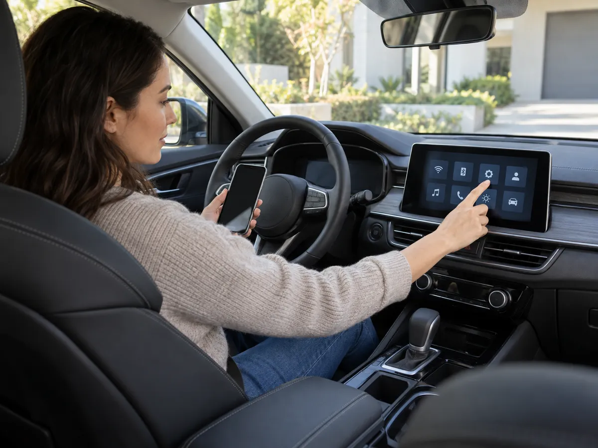

▲ 주행 중 연결이 끊기는 상황을 표현한 개념 이미지 ⓒ CarPrism (AI 생성 이미지)
"분명 어제까지 잘 됐는데, 왜 오늘은 시동 걸자마자 끊기지?" 무선 카플레이와 안드로이드 오토 사용자가 가장 자주 하는 말이다. 다만 원인은 차종, 폰 기종, OS 버전마다 달라서 "이것 하나면 해결된다"는 처방은 존재하지 않는다. 이 글은 애플 지원, 구글 Android Auto 도움말, 현대·기아·제네시스 웹 매뉴얼에서 확인되는 조치를 먼저 세우고, 공식 문서로 확인되지 않은 내용은 '사용자 보고' 또는 '확인 필요'로 구분했다. 다만 아래 '순서' 자체는 각 문서의 조치를 쉬운 것부터 편집부가 배열한 것이며 제조사가 이 순서로 안내한 것은 아니다. (확인 기준일 2026년 9월 29일)
1. 왜 "원인은 이것"이라고 단정할 수 없나
무선 카플레이·안드로이드 오토는 폰, 차량 헤드유닛, 블루투스, Wi-Fi(폰과 차량이 직접 연결)가 동시에 맞물려 돌아가는 구조다. 어느 한 곳의 소프트웨어 업데이트만 달라져도 증상이 달라질 수 있다. 그래서 제조사 문서도 특정 원인을 찍기보다 "재시작, 재등록, 최신 소프트웨어, 호환 확인" 같은 일반 조치를 제시한다.
▲ 주행 중 연결이 끊기는 상황을 표현한 개념 이미지. 실제 화면·브랜드 UI와는 무관하다 ⓒ CarPrism (AI 생성 이미지)
📍 이 글의 표기 원칙
[공식] 애플·구글·현대차 문서에서 확인된 내용 / [사용자 보고] 커뮤니티·후기에서 반복되지만 공식 확인은 못한 내용 / [확인 필요] 차종·폰 조합에 따라 달라질 수 있는 내용. 특정 차종과 폰 기종의 조합은 단정하지 않는다.
2. 가장 먼저 할 것 — 5분 해결 순서
공식 문서에서 확인되는 조치를 쉬운 것부터 나열하면 다음과 같다. 순서는 편집부 구성이며, 각 단계의 근거는 표의 오른쪽 열에 적었다. 위에서 아래로 하나씩 해 보고, 매번 연결이 되는지 확인한다.
| 단계 | 조치 | 근거 |
|---|---|---|
| 1 | 폰의 블루투스·Wi-Fi가 모두 켜져 있는지 확인 (안드로이드는 위치 서비스도), 아이폰은 CarPlay 네트워크의 자동 연결(Auto-Join) 켜짐 확인 | [공식] 애플 지원, 현대·기아 웹 매뉴얼, 구글 도움말 |
| 2 | 폰과 차량(시동 껐다 켜기 또는 인포테인먼트 재시작) 재시작 | [공식] 애플 지원 / 구글 도움말(인포테인먼트 재시작) |
| 3 | 폰 OS·앱, 차량 소프트웨어 최신 여부 확인 | [공식] 애플(iOS 최신, 오디오 펌웨어 최신), 현대차 매뉴얼(iOS 최신 권장) |
| 4 | 아이폰은 스크린 타임의 CarPlay 허용 여부, Siri 켜짐 확인 | [공식] 애플 지원 |
| 5 | 폰과 차량 양쪽에서 등록 삭제 후 처음부터 재연결 | [공식] 애플 지원, 현대·기아·제네시스 웹 매뉴얼 |
| 6 | 다른 폰·다른 차량과의 연결 기록이 꼬였다면 안드로이드 오토의 '모든 차량 삭제' 후 재연결 | [공식] 구글 도움말 |
✅ 매뉴얼 근거
현대차·기아 웹 매뉴얼(ccNC AVNT 기준)의 '폰 프로젝션 연결 오류 해결 방법'에서 '등록 삭제 후 재등록' 조치를 확인할 수 있다. 두 문서의 증상표는 '무선 연결 실패'의 원인을 '시스템 이상'이라고만 적고 해결책으로 모든 등록 기기 삭제 후 재연결을 제시할 뿐, 간섭·배터리 같은 세부 원인은 밝히지 않는다. 현대차 공식 안내 바로가기 기아 공식 안내 바로가기
이미 기본 순서를 한 번 정리한 기사가 있다. 케이블·USB 포트·증상별 원인표까지 함께 보려면 카플레이·안드로이드 오토가 안 뜨거나 자꾸 끊길 때, 5분 안에 해볼 순서를 참고하면 된다.
3. 삭제 후 재연결 — 폰과 차량 양쪽 모두 지워야 한다
현대차·기아 웹 매뉴얼은 안드로이드 오토·카플레이 오류 시 등록 기기를 폰과 차량 시스템 양쪽에서 삭제한 뒤 다시 등록하라고 안내한다. 한쪽만 지우면 남은 쪽의 기록 때문에 같은 오류가 반복될 수 있다. 문서에 적힌 순서는 다음과 같다.
| 구분 | 삭제 위치 | 재등록 |
|---|---|---|
| 안드로이드 오토 | 폰: 설정 → 연결 → 블루투스 → 해당 기기 등록 해제 차량: 설정 → 기기 연결 → 기기 삭제 | 차량 시스템에서 '신규 추가'로 다시 등록 |
| 애플 카플레이 | 아이폰: 설정 → 일반 → CarPlay → 자동차 선택 → '이 자동차 지우기' 아이폰: 설정 → Bluetooth → 정보 버튼 → '이 기기 지우기' 차량: 기기 삭제 | 차량 시스템에서 다시 등록 |

▲ 재등록 전에는 폰의 블루투스 목록에서 차량 항목을 먼저 지운다. 화면은 실제 UI가 아닌 개념 표현이다 ⓒ CarPrism (AI 생성 이미지)
애플 지원도 같은 취지로 설정 → 일반 → CarPlay에서 차량을 선택해 '이 자동차 지우기' 후 다시 설정하도록 안내한다. 현대차·기아 무선 안드로이드 오토 안내는 연결이 불안정할 때 Wi-Fi 연결 키를 다시 생성한 뒤 재시도하라고 주의사항에 적고 있다(메뉴 명칭은 차종별 매뉴얼 확인 필요). 두 문서에는 한 시스템에 등록할 수 있는 폰이 안드로이드 최대 6대, 아이폰 최대 6대라는 설명도 있다. 제네시스 오너스 매뉴얼(PREM_GEN6 AVNT)의 '폰 프로젝션 연결 오류 해결하기'도 같은 삭제·재등록 절차를 안내한다.
⚠️ 삭제 전에 알아 둘 것
기아 웹 매뉴얼은 기기를 삭제하면 차량 시스템에 내려받았던 연락처·통화 기록·메시지가 함께 지워진다고 알린다. 다시 등록하면 동기화 여부를 확인해야 하며, 자세한 동작은 차종별 매뉴얼을 확인해야 한다.
구글 도움말은 두 번째 차량에 연결이 안 될 때 설정 → 연결된 기기 → 연결 환경설정 → Android Auto → 이전에 연결된 차량에서 '모든 차량 삭제' 후 재연결하는 방법을 제시한다(폰 UI는 제조사·OS 버전에 따라 다를 수 있다). 구글 도움말 바로가기
4. 무선 연결이 특히 민감한 이유 — 블루투스와 Wi-Fi
무선 방식은 처음 블루투스로 폰을 찾은 뒤 실제 화면 데이터는 Wi-Fi로 주고받는 방식으로 알려져 있다. 그래서 두 기능 중 하나라도 꺼져 있으면 연결이 되지 않는다. 애플 지원은 "블루투스와 Wi-Fi를 모두 켜라"고 명시하고, 현대차 매뉴얼도 무선 카플레이·안드로이드 오토 연결 전에 폰의 Wi-Fi와 블루투스를 반드시 켜야 한다고 적었다. 구글 도움말은 여기에 위치 서비스까지 켜 두라고 안내한다.
| 항목 | 도움말 내용 |
|---|---|
| 폰 | Android 11.0 이상, 5GHz Wi-Fi 지원, 사용 가능한 데이터 요금제 |
| 차량 | 무선 안드로이드 오토를 지원하는 차량 또는 스테레오 |
| 5GHz 지원 여부 | 폰 제조사에 문의 (도움말 안내) |
즉 폰이 5GHz Wi-Fi를 지원하지 않거나 OS가 낮으면 무선 자체가 안 될 수 있다. 다만 개별 폰 기종의 지원 여부는 이 글에서 확인하지 못했다. 구글 무선 요건 바로가기
애플은 카플레이 전용이 아닌 일반 Wi-Fi·블루투스 간섭 안내에서 전원 케이블, 전자레인지, 형광등, 무선 비디오 카메라, 코드리스 전화기 등을 간섭원으로 꼽고, 같은 주파수 대역을 쓰는 기기 수를 줄이라고 권한다(주로 Mac·공유기 환경 설명). 이를 차 안 무선 카플레이에 그대로 적용할 수 있는지는 확인되지 않았다. 애플 무선 간섭 안내 바로가기

▲ 무선 카플레이가 정상 실행된 폭스바겐 ID.4 순정 화면 ⓒ Sunnyboy122 / Wikimedia Commons (CC0)
⚠️ 공식 확인이 안 된 원인 — 사용자 보고 영역
다음은 커뮤니티에서 자주 거론되지만 애플·구글·제조사의 공식 안내 문서에서 원인으로 확인하지 못한 항목이다. 구글 Android Auto 커뮤니티 게시판에도 관련 글이 많지만 이는 이용자가 올린 글이지 구글 공식 도움말이 아니다. 참고만 하고 확정 원인으로 받아들이지 않는 편이 좋다.
· [사용자 보고] 폰 배터리 절전·최적화에서 앱을 제외하면 나아졌다는 글 — 폰 제조사마다 설정이 달라 일반화할 수 없음
· [사용자 보고] 다른 기기·핫스팟이 방해한다는 추정 — 공식 확인 필요
· [사용자 보고] OS·앱 업데이트 직후 특정 조합에서 끊김이 시작됐다는 글 — 개별 사례이며 일반화 불가
· [사용자 보고] 무선 사용 시 배터리 소모·발열이 크다는 글 — 공식 수치 확인 못함
5. 유선 vs 무선 — 무엇이 다른가
편리함은 무선이, 안정성은 유선이 낫다는 이야기가 많지만, 어디까지 공식 문서로 확인되는지는 구분해야 한다.
| 항목 | 유선 | 무선 | 근거 |
|---|---|---|---|
| 연결 준비 | 케이블 연결 | 블루투스·Wi-Fi 켜고 최초 페어링 | [공식] |
| 케이블 문제 | 케이블·포트 품질에 민감(구글: 1m 이하, 허브·연장선 금지) | 해당 없음 | [공식] 구글 |
| 충전 | 연결 중 충전됨 | 별도 충전 필요 | 일반적으로 알려진 특성 |
| 지연·배터리 소모 | 일반적으로 안정적이라는 평 | 일반적으로 소모가 더 크다는 평 | [사용자 보고] 애플·구글·제조사 공식 수치 확인 못함 |

▲ 유선 연결은 케이블과 USB 포트 상태가 변수다. 특정 차종·제품과 무관한 개념 이미지다 ⓒ CarPrism (AI 생성 이미지)
애플 지원은 일부 어댑터·케이블·차량 시스템 조합이 유선 카플레이 연결을 방해할 수 있다고 밝히며 직접 USB 연결을 권한다. 구글도 유선 사용 시 폰 기본 케이블을 먼저 시도하고 규격 인증 케이블을 쓰라고 권고한다. 현대차 웹 매뉴얼(유선 카플레이)도 폰 제조사가 제공한 정품 USB 케이블을 권장하고, USB 커넥터를 짧은 간격으로 반복 탈착하면 시스템 오작동이 생길 수 있다고 주의를 준다. 인식 시간은 기기·펌웨어·OS 버전에 따라 다르다고도 적었다. 무선이 계속 불안정하다면 유선으로 임시 대체하는 것도 현실적인 선택이다.

▲ 폰을 거치대에 두고 차량 화면에 안드로이드 오토를 띄운 예. 무선·유선 여부는 사진만으로 알 수 없다 ⓒ Mavila2 / Wikimedia Commons (CC BY-SA 4.0)
6. 소프트웨어 업데이트와 차량 쪽 점검
애플 지원은 카플레이 헤드유닛에 제조사 최신 펌웨어가 적용됐는지 확인하라고 안내한다. 현대차 매뉴얼도 무선 카플레이 이용 시 아이폰을 최신 iOS로 유지하도록 권장한다. 즉 업데이트는 폰과 차 양쪽 모두의 문제다. 구글 도움말은 애프터마켓 수신기의 경우 펌웨어 업데이트가 있는지 확인하라고 하고, 인포테인먼트 시스템 자체를 재시작해 보라고 한다.

▲ 차량 화면에 카플레이 아이콘이 보이는데도 자동 전환이 안 되면 화면의 아이콘을 직접 눌러 본다 ⓒ Rberchie / Wikimedia Commons (CC BY-SA 4.0)
차량 소프트웨어 업데이트 가능 여부와 방법은 제조사·차종마다 달라 여기서 단정할 수 없다. 현대·기아 등 제조사의 무선 업데이트(OTA)나 서비스센터 업데이트 제공 여부는 소유 차량의 공식 안내에서 확인해야 한다.

▲ 주행 중에는 연결이 끊겨도 화면 조작을 피하고 안전한 곳에 정차한 뒤 점검한다 ⓒ DoulosBen / Wikimedia Commons (CC BY 4.0)
7. 내 차 매뉴얼은 어디서 찾나
현대·기아·제네시스는 웹 매뉴얼을 차량 시스템 세대별로 나눠 두었다. 기존 webmanual 주소는 ownersmanual 주소로 이동(301)하는 것을 확인했다. 아래 표는 이번에 실제로 열어 본 문서만 적었다.
| 제조사·시스템 | 확인한 내용 |
|---|---|
| 현대차 ccNC AVNT | 오류 시 폰·차량 양쪽 등록 삭제 후 재등록, 무선 사용 시 폰의 Wi-Fi·블루투스 켜기, 안드로이드·아이폰 각 최대 6대 등록 |
| 기아 ccNC AVNT | 현대차와 같은 삭제·재등록 순서, 삭제 시 연락처·통화기록·메시지 삭제 안내 |
| 기아 ccNC Lite AV | 무선 안드로이드 오토: Wi-Fi·블루투스 필수, 불안정하면 Wi-Fi 연결 키 재생성 |
| 제네시스 PREM_GEN6 AVNT | 같은 삭제·재등록 절차 (차종 세부는 문서에 명시되지 않음) |
| ccNC 이전 시스템(현대 DA_GEN2_V 등) | 별도 매뉴얼이 존재하지만 이 글에서 조치 내용은 확인하지 못함 |
✅ 내 차 시스템 세대 확인
· 차 화면의 설정에서 시스템 정보·버전을 확인하거나 취급설명서에서 내비게이션 시스템 명칭을 확인
· 해당 세대의 웹 매뉴얼 '폰 프로젝션' 항목에서 연결 오류 해결 방법을 찾기
· 무선 카플레이·안드로이드 오토 지원 여부는 트림·옵션에 따라 다를 수 있으니 고객센터에 확인
8. 그래도 안 된다면 — 확인할 것과 서비스센터 기준

▲ 재등록·설정 변경은 안전을 위해 차를 세운 상태에서 한다. 화면은 개념 표현이다 ⓒ CarPrism (AI 생성 이미지)
✅ 서비스 문의 전 정리해 둘 것
· 언제부터, 어떤 상황(시동 직후/주행 중/특정 구간)에서 끊기는지 기록
· 다른 폰으로 연결해도 같은지(폰 문제인지 차량 문제인지 구분)
· 폰 OS 버전과 차량 인포테인먼트 버전
· 유선으로는 정상인지 여부
다른 폰에서도 같은 증상이 나면 차량 쪽 원인 가능성이 커지고, 내 폰에서만 그렇다면 폰 설정이나 OS 쪽을 의심해 볼 수 있다. 다만 이 역시 일반적인 추론이며 확정은 제조사 진단이 필요하다. 현대차·기아 매뉴얼은 '무선 연결 실패'에 대해 등록된 모든 기기를 삭제한 뒤 재연결하라고 제시한다. 애플은 위 조치로 해결되지 않으면 자체 지원 도구로 개인별 안내를 받으라고 한다. 애플 지원 바로가기
9. 요약
무선 카플레이·안드로이드 오토가 끊길 때 애플·구글·현대·기아 공식 문서가 공통으로 제시하는 것은 재시작, 블루투스·Wi-Fi 켜짐 확인, 최신 소프트웨어, 그리고 폰·차량 양쪽에서 등록을 지운 뒤 재연결하는 것이다. 구글은 무선에 Android 11 이상과 5GHz Wi-Fi 지원 폰이 필요하다고 안내한다.
유선은 케이블·포트 품질이, 무선은 블루투스·Wi-Fi 상태가 변수다. 배터리 최적화, 무선 지연·발열 같은 원인은 공식 안내에서 확인하지 못했고 사용자 보고 수준이며, 전파 간섭은 애플의 일반 무선 안내만 확인됐으므로 참고만 하자.
차종·폰 조합마다 원인이 달라 이 순서가 만능은 아니다. 폰을 바꿔도 같은 증상이면 서비스센터에서 차량 소프트웨어를 점검받는 것이 확실하다. (기준일 2026년 9월 29일)